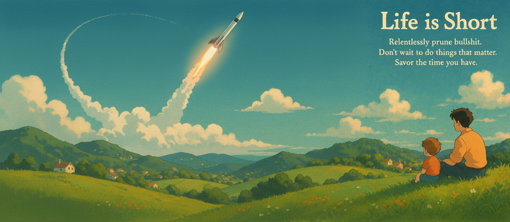

Don't you understand what's at stake?
The world you live in now is optimized to distract you. Not by accident, but by design. Every notification, every infinite scroll, every AI-generated suggestion is there for a reason. The reason is money. The more seconds you spend, the more predictable your behavior, the more valuable you are. That's what business models look like when they're built on screens, algorithms, and attention. If you feel like your mind is being chipped away, second by second, that's because it is.
Your mind is trying to tell you something valuable, and instead of addressing it directly, you're trying to flood it with painkillers. If you feel you need to scroll, there must be some problem you’re trying to conceal. What is it you're trying to escape? You have to get to the bottom of it.
You want to doomscroll because you don't have a worthy quest.
This moment is the youngest you’ll ever be. It’s a moment your future-self will wish you could have back. Don’t waste it scrolling through posts you won’t even remember tomorrow.